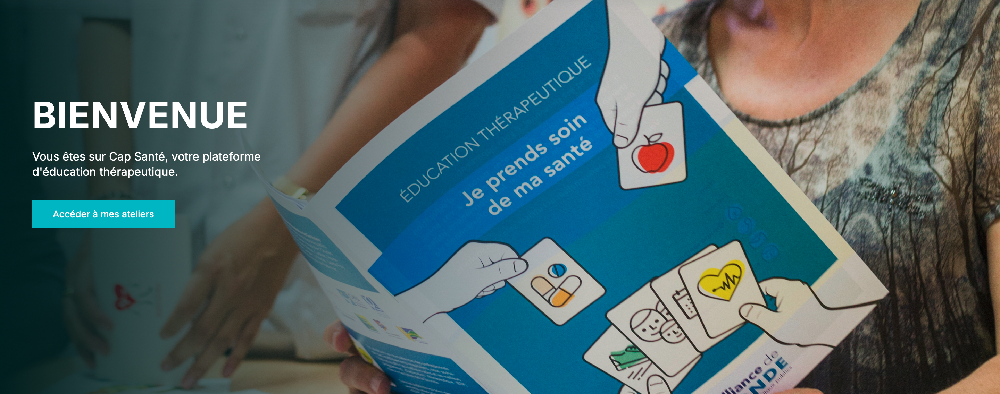

Votre plateforme d'accompagnement personnalisé
pour mieux comprendre et gérer votre santé au quotidien.
Un nouveau programme d'accompagnement pour les patients atteints de schizophrénie est maintenant accessible sur la plateforme.
DécouvrirLes programmes Diabète et HTA s'enrichissent de nouveaux modules interactifs et vidéos pédagogiques.
Voir les nouveautésDécouvrez les retours d'expérience de patients qui ont suivi nos programmes d'éducation thérapeutique.
Lire les témoignagesUne plateforme innovante pour vous accompagner dans votre parcours de santé
Ces programmes s'intègrent dans votre parcours de soins. N'hésitez pas à en discuter avec votre équipe soignante.
Des parcours d'éducation thérapeutique adaptés à chaque pathologie
Comprendre et gérer votre diabète au quotidien : alimentation, surveillance, traitements.
Maîtriser votre tension artérielle : mesure, hygiène de vie, traitement.
Comprendre et gérer les émotions : outils pratiques et stratégies d'adaptation.
Vivre avec la schizophrénie : reconnaître les symptômes, adhérer au traitement.
Contrôler votre asthme : reconnaître les crises, utiliser vos traitements.
Surveiller et adapter votre mode de vie : signes d'alerte, activité physique.
Broncho-pneumopathie : respirer mieux, gérer l'essoufflement, éviter les crises.
Soulager les douleurs articulaires : exercices, traitements, adaptation quotidienne.
Comprendre et sortir de la dépression : reconnaître les signaux, trouver du soutien.
Adopter une alimentation équilibrée : comprendre les besoins, retrouver le plaisir.
Information : Votre programme d'accompagnement est défini avec votre équipe soignante selon vos besoins spécifiques. Une fois connecté, vous aurez accès au programme validé pour vous.